Executor: the runtime shared by task attempts
component index | Lifecycle guide
On classic YARN, Executor is a long-lived object inside the executor JVM, not the NodeManager, the backend RPC endpoint, or a Python worker. One instance serves many attempts using the same SparkEnv, block manager and JVM. The driver chooses what fits on the executor; the executor runs what it is assigned.
Flow at a glance
- Early cancellation: The executor saves a kill mark for the attempt ID.
- Late launch: The executor applies the mark before submitting the runner.
- Task runner: Report the attempt killed without running the partition.
Key distinction: The kill mark belongs to one attempt ID, not to every attempt for that partition.
Show the animated flow

What lives for the executor's lifetime?
| State or thread |
What it does |
Task worker pool and runningTasks |
A cached pool of daemon UninterruptibleThread workers runs TaskRunners. The concurrent map is keyed by attempt ID, not partition. The pool size is not the advertised slot count: the driver accounts for CPUs and other resources at launch. |
| Artifacts and class loaders |
Tracks files, jars and archives by version/timestamp. Updates use an interruptible lock rather than letting concurrent tasks race to install dependencies. A task sets its thread's loader before deserializing user classes. |
| Kill marks and optional reapers |
killMarks remembers (interruptThread, reason, timestamp) if cancellation wins the race with launch. A scheduled sweep expires stale marks. Reapers, when enabled, run in a separate pool so the backend need not wait for user code to stop. |
| Heartbeater and metrics poller |
Periodically snapshot executor metrics and available accumulator updates from active tasks. They are separate from both the task workers and the RPC endpoint dispatcher. |
Pool and storage setup | Class loaders, maps and cleanup timer | Dependency lock
Startup, work and retirement
- Initialize the runtime. After driver registration the backend constructs
Executor(id, host, env, userClassPath, isLocal = false, resources). It installs the process uncaught-exception handler, initializes the block manager with the application ID and registers metrics sources. Block manager initialization starts its transfer service and registers its own storage identity; this is distinct from scheduler registration. The heartbeater starts before plugin initialization; initial artifacts are loaded before plugins and the shuffle manager. Only after construction returns does the backend announce readiness. Initialization order | Readiness message
- Accept a launch.
launchTask(backend, description) constructs a TaskRunner for the attempt, puts it in runningTasks, applies any pending kill mark, then submits it to the pool. The RPC dispatcher can return without waiting for the partition. The runner uses the backend to report RUNNING and a terminal state with a result or failure reason. On the usual exit path its finally removes the map entry; it does not destroy the executor. Submission and cancellation | Runner cleanup
- Report liveness independently.
Heartbeat(executorId, accumulatorUpdates, blockManagerId, executorUpdates) goes to the driver's HeartbeatReceiver, not the AM. A successful HeartbeatResponse resets the failure count and can request block manager re-registration. Repeated send/response failures reaching the configured maximum make the executor exit. Separately, the driver expires executors whose last heartbeat is too old. A heartbeat is neither task completion nor a request to launch more tasks. Heartbeat request and reply
- Retire. During decommission the driver stops offering new work and the backend monitors draining. The executor's local flag diagnoses a racing launch; it is not a hard rejection in
launchTask. stop() is guarded by an atomic flag: it reports metrics, stops polling and heartbeats, shuts down the task pool and kill-mark timer, notifies plugins and stops the non-local SparkEnv. The shutdown hook uses the same method. Decommission and launch | Stop sequence
Failure clue: If one TID stops making progress while heartbeats and other attempts continue, look at that task rather than treating the whole container as lost. With the reaper enabled, Killed task ... is still running means cancellation was requested but the code has not finished; the reaper can log its stack. Only if a configured positive kill timeout expires does the non-local reaper escalate a stuck kill to JVM failure. Conversely, Issue communicating with driver in heartbeater is from the heartbeat thread; it does not identify a particular task. Reaper decisions | Heartbeat failure counter
For a PySpark job, a JVM-only expression stays on the task thread. When the plan actually invokes Python, a Python runner obtains a worker and streams input/output for that attempt. The worker does not register as another Spark executor or receive LaunchTask from YARN.